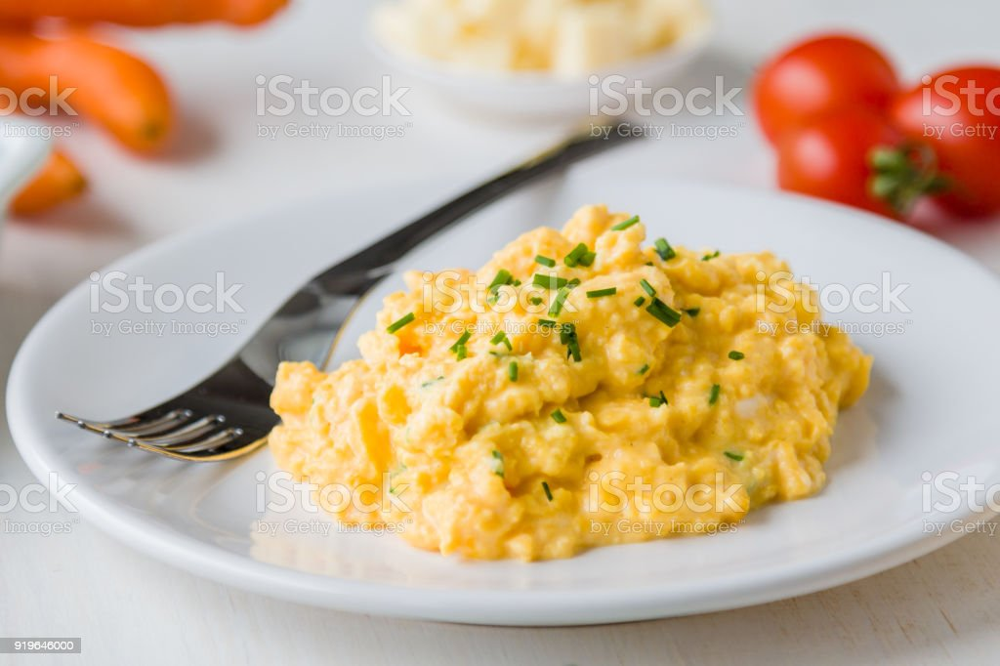

Scrambled Eggs

Scrambled eggs are a delicious, common breakfast meal. Paired with toast or waffles and a cup of coffee, scrambled eggs can be a great start to your day.
Depending on preference, scrambled eggs can be cooked longer for a more solid texture, while some turn the heat off early to gain a creamy, runny consistency.
-Ingredients
- 8 large eggs
- Kosher salt and freshly ground black pepper
- 2 tablespoons unsalted butter
-Steps
- Lightly beat the eggs, 3/4 teaspoon salt and a few grinds of black pepper in a medium bowl.
- Melt 1 tablespoon of the butter in a medium nonstick skillet over low heat; swirl to coat the bottom and sides.
- Add the eggs, and cook slowly, scraping them up with a rubber spatula occasionally, until most of the liquid has thickened and the eggs are soft, about 10 minutes.
- If you like your eggs a little firmer, cook them for an additional 2 to 3 minutes. Remove them from the heat, and gently fold in the remaining 1 tablespoon of butter. Serve hot.
Sources:
Simple Scrambled Eggs Recipe